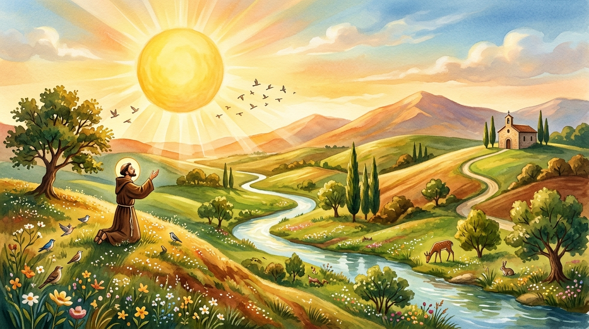

El Nacimiento en Medio del Dolor y la Luz
El Cántico de las Criaturas no nació en un momento de fácil deleite, sino en el valle de Umbría cuando Francisco se hallaba postrado en el convento de San Damián, aquejado por una dolorosa enfermedad ocular y los estigmas de La Verna que casi le privaban de la vista. En lugar de sumirse en la amargura, Francisco experimentó una íntima revelación celestial y entonó la más pura alabanza cósmica al Creador.

La Primera Joya de la Poesía en Lengua Italiana
En el siglo XIII, la liturgia, la diplomacia y las letras cultas se redactaban exclusivamente en latín. Francisco rompió el canon elitista componiendo el himno en dialecto umbro, la lengua viva del pueblo llano. Por esta razón, la crítica literaria universal reconoce al Cántico como la piedra angular inaugural de la literatura lírica italiana, anterior incluso a la Divina Comedia de Dante.

Una Misión Viva en Más de 110 Naciones
Fundada con el ideal evangélico de la santa pobreza, la hermandad de los Frailes Menores se expandió vertiginosamente por el orbe. Hoy en día, los sacerdotes y frailes franciscanos custodian los Santos Lugares en Tierra Santa (Custodia Terrae Sanctae), administran hospitales, asilos y comedores solidarios, y defienden los derechos de las comunidades más desfavorecidas con el lema de Paz y Bien.

Del Pesebre de Greccio a la Encíclica Laudato Si'
El influjo de San Francisco abarca hitos imborrables: la creación del primer Belén de Navidad en la cueva de Greccio (1223), el audaz encuentro pacífico con el Sultán al-Kamil en pleno asedio de las Cruzadas (1219), y la inspiración directa para la encíclica ecologista papal Laudato Si', que convoca a la humanidad contemporánea al cuidado amoroso de nuestra «casa común».